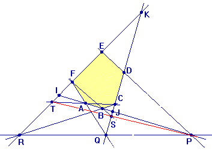

| Choisissez votre langue ! | Choose your language ! |
Théorème de Pascal
On s'intéresse à la figure suivante :
ABCDEF est un hexagone.Les côtés (ED) et (AB) se coupent en P.
Les côtés (FA) et (DC) se coupent en Q.
Les côtés (CB) et (EF) se coupent en R.
On suppose les points P,Q,R alignés.
Soit I le point d'intersection de (FE) et (AC).
Soit J le point d'intersection de (AB) et (CD).
Soit K le point d'intersection de (FE) et (DC).
Dans ces conditions montrer que I,J,P sont également alignés.
Un hexagone tel que celui montré ici s'appelle un 'hexagramme mystique de Pascal' ou plus simplement 'hexagramme mystique' .
Déduire de ce qui précède que si ABCDEF est un hexagramme mystique, tout hexagone obtenu par permutation des sommets de ABCDEF est encore un hexagramme mystique.aide
Soit IJK le triangle défini par les droites CD,EF,AB. Appliquer plusieurs fois le théorème de Ménélaüs sur les côtés du triangle IJK.
solution
On applique le théorème de Ménélaüs sur les côtés du triangle IJK.
Pour l'alignement des points BCR.
Pour l'alignement des points AFQ.
Pour l'alignement des points ACT.
Pour l'alignement des points BFS.
Pour l'alignement des points PQR.
On obtient ainsi 5 égalités algébriques que l'on multiplie entre elles.
L'égalité résultante, conjointement avec la réciproque de Ménélaüs, donne l'alignement de I,J,P.
Le résultat précédent prouve qu'en inversant deux sommets consécutifs d'un hexagramme mystique on obtient encore un hexagramme mystique.
Il suffit alors d'appliquer le résultat qui dit que toute permutation peut s'écrire comme produit de tramspositions d'éléments consécutifs.
Pascal's theorem
We are interested in the following figure:ABCDEF is a hexagon.
Sides (ED) and (AB) intersect at P.
The sides (FA) and (DC) intersect in Q.
The sides (CB) and (EF) intersect at R.
We assume that the points P,Q,R are aligned.
Let I be the point of intersection of (FE) and (AC).
Let J be the intersection point of (AB) and (CD).
Let K be the point of intersection of (FE) and (DC).
Under these conditions show that I,J,P are also aligned.
A hexagon such as the one shown here is called a 'mystical hexagram of Pascal' or more simply 'mystical hexagram' .
Deduce from the above that if ABCDEF is a mystical hexagram, any hexagon obtained by permutation of the vertices of ABCDEF is still a mystical hexagram.hint
Let IJK be the triangle defined by the lines CD,EF,AB. Apply Menelaus' theorem several times on the sides of the triangle IJK.
solution
We apply Menelaus' theorem to the sides of the triangle IJK.
For alignment of points BCR .
For alignment of points AFQ.
For alignment of points ACT.
For alignment of points BFS.
For alignment of points PQR.
We thus obtain 5 algebraic equalities which we multiply together.
The resulting equality, together with the reciprocal of Menelaus, gives the alignment of I,J,P.
The previous result proves that by inverting two consecutive vertices of a mystical hexagram we still obtain a mystical hexagram.
It is then enough to apply the result which says that any permutation can be written as a product of tramspositions of consecutive elements.
|
Création Gilles Dubois
Created by Gilles Dubois
|
Janvier 2022
January 2022
|
Version mobile Jquery
Mobile Jquery version
|
|